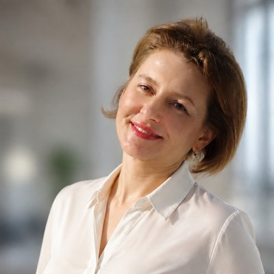

Пересмотр зарплат: бюджет и результат
Матрица пересмотра: кому и на сколько изменить вознаграждение, как это повлияет на ФОТ текущего и следующего года, укладывается ли пересмотр в целевой бюджет.
Открыть калькулятор
Ольга Димитровабюджет ФОТ и аналитика вознаграждений
У пересмотра зарплат, новых вакансий, премий и проектов появляется цена до утверждения бюджета. Вы видите, что оставить, что перенести и от чего отказаться.
16 лет в МегаФоне, ЭР-Телекоме и Магнит Тех: от 1 200 до 17 000 человек, бюджеты затрат на персонал до 28 млрд ₽ в год.
Бюджет 2027 утверждают в ноябре и декабре. Проверка модели занимает от 5 рабочих дней.
Напишите в Telegram и пришлите структуру модели без зарплат и сумм: назову три места, где риск для бюджета выше всего. Первый ответ в течение рабочего дня.
Три открытых инструмента работают в браузере, данные остаются на вашем компьютере. К каждому есть Excel-модель с открытыми формулами.
Матрица пересмотра: кому и на сколько изменить вознаграждение, как это повлияет на ФОТ текущего и следующего года, укладывается ли пересмотр в целевой бюджет.
Открыть калькуляторСколько открытые позиции стоят на самом деле в бюджетном году. Чей выход перенести, чтобы уложиться в лимит ФОТ. Влияние на ФОТ следующего года.
Открыть календарьСигнальный дашборд: где исполнение бюджета ФОТ расходится с планом и на сколько.
Открыть дашбордПосчитали на своих цифрах и появился вопрос? Напишите, разберу.
Заявки руководителей превышают лимит ФОТ.
Модель бюджета со сценариями: индексация, пересмотр зарплат, новые вакансии с реальными датами выхода. Видна стоимость каждой инициативы и варианты, как уложиться в лимит ФОТ.
Вы получаете: модель в Excel с открытыми формулами и материалы для бюджетного комитета.
Нужно решение по пересмотру или премии.
Подготовлю 2–3 сценария с оценкой влияния на ФОТ текущего и следующего года. У каждого варианта есть цена, руководство выбирает, что оставить и от чего отказаться.
Вы получаете: сценарии с ценой каждого и матрицу пересмотра, по которой считаются индивидуальные повышения.
ФОТ отклоняется от плана, а отчётность собирают вручную неделями.
Настрою регулярный план-факт с разбором причин отклонений, автоматизирую сбор и консолидацию данных по юрлицам, разработаю дашборды для контроля расходов. В холдинге из 39 дочерних обществ HR-партнёры, руководители подразделений и команда C&B перешли с разовых запросов на дашборды.
Вы получаете: один источник данных о ФОТ для HR, финансов и руководителей.
ФОТ проектных команд считают отдельно от основного.
Включу ФОТ проектных команд в общий бюджет, автоматизирую его расчёт и консолидацию с основным. Соберу расчёт стоимости команды проекта по ролям и ставкам, чтобы сравнивать проекты по затратам на персонал до запуска.
Вы получаете: полную сумму затрат на персонал в одной модели и цену каждого проекта.
Рутина отнимает дни, а зарплатные данные нельзя выносить наружу.
Сверка выгрузок, сбор дашбордов, разбор отклонений. Работаю на внутренней нейросети вашей компании или на обезличенных данных. Покажу, где ИИ экономит время, а где надёжнее обычная формула.
Вы получаете: рабочие инструменты под ваши задачи и инструкции для команды.
С неё обычно начинают
от 150 000 ₽
от 5 рабочих дней
Проверю расчёты и допущения перед защитой: даты выхода, повышения, налогообложение. По каждой ошибке покажу влияние на бюджет в рублях и подготовлю аргументы для бюджетного комитета. Бесплатный разбор показывает зоны риска по структуре модели, проверка идёт по вашим цифрам и формулам.
цена после первой встречи
оплата по этапам
Модель бюджета, план-факт, отчётность или инструмент для пересмотра зарплат на ваших данных. Цену, срок и состав результата фиксирую письменно до начала работ.
В конце обучаю вашу команду работать с инструментом.
от 90 000 ₽ в месяц
одно юрлицо, ежемесячный цикл
Пришёл факт: обновляю прогноз, разбираю отклонения и пишу, на что обратить внимание в следующем месяце. Пересчитываю модель, когда бюджет пересматривают в середине года.
Когда команда готова вести модель сама, передаю инструмент и обучаю.
Напишите в Telegram и пришлите её структуру без зарплат и сумм: листы, статьи затрат, допущения. В ответ назову три места, где риск для бюджета выше всего, и объясню почему. Бесплатно и без встречи. Нужна ли после этого полная проверка, решаете вы.
Встреча на 45 минут, бесплатно. Вы рассказываете задачу, данные для этого не нужны. Я говорю, что можно сделать своими силами и что имеет смысл отдать мне. После встречи присылаю состав работ, срок и цену.
16 лет в управлении вознаграждениями и HR-аналитике: МегаФон, ЭР-Телеком, Магнит Тех. В Магнит Тех за три месяца выстроила отчётность по бюджету на персонал для 4 500 человек: план-факт, дашборды, разбор отклонений. Прогноз ФОТ держала в пределах 3–4% от факта.
Напишите в Telegram и пришлите структуру модели без зарплат и сумм: назову три места, где риск для бюджета выше всего. Первый ответ в течение рабочего дня.